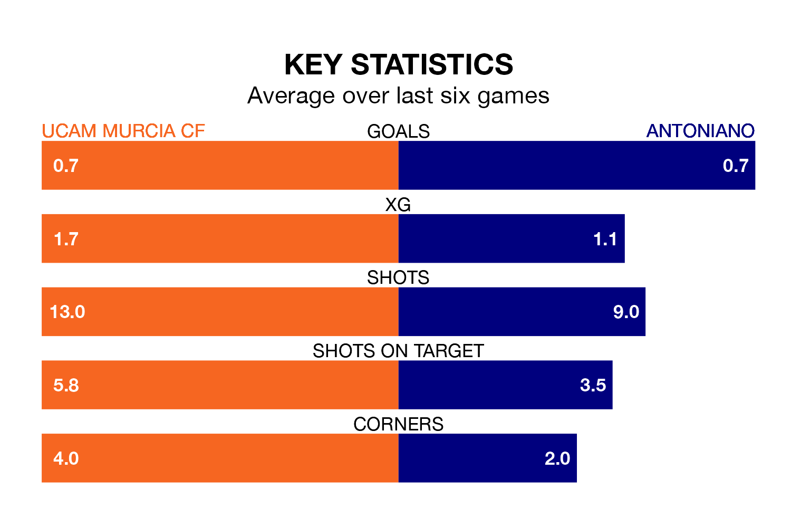

UCAM Murcia CF are heavy favourites to keep all three points at home in Sunday's early kick-off against Antoniano.
UCAM Murcia, who sit 10th in the Segunda División RFEF Group 4 with 21 games played, are priced at 1.4 to seal victory at Estadio de La Condomina.
Sitting three places and four points behind them in the table, Antoniano are 7.0 to win with *Betting Company*, while the draw is at 3.7.
With 15 goals in 21 games so far this season, Antoniano are scoring at below the league average rate with 0.7 goals per game. And they are conceding more than average, letting in 28 goals at a rate of 1.3 per game.
UCAM Murcia, meanwhile, are average scorers, with 1.0 goal per game. They have conceded 1.1 goals per game.
The hosts are in disappointing form in the Segunda División RFEF Group 4, with one win and two draws from their last six games.
With two wins and two draws over that period, the away team's form is better – they have taken eight points from 18, compared to UCAM Murcia's five.
UCAM Murcia's last match was on February 4, a 1-1 draw against Cartagena B.
Antoniano drew 0-0 with Vélez last time out, also on February 4.
Updated: 11:18 (UTC), 08/02/24